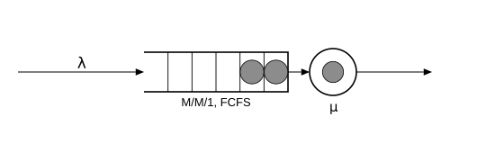

Kendall notation and M/M/1
Queueing models are named with a shorthand invented by David Kendall:
\[A \,/\, S \,/\, c\]
- $A$ — the arrival process,
- $S$ — the service-time distribution,
- $c$ — the number of servers.
The letters in the first two slots form a small alphabet. M stands for Markovian, or memoryless: a Poisson arrival stream, or exponential service times. D is deterministic: a fixed constant. G is general: any distribution. So:
| name | meaning |
|---|---|
| M/M/1 | Poisson arrivals, exponential service, one server |
| M/D/1 | Poisson arrivals, constant service, one server |
| M/G/1 | Poisson arrivals, any service distribution, one server |
| M/M/c | Poisson arrivals, exponential service, $c$ servers |
This page is about the first row: M/M/1, the simplest queue there is, and the one with the cleanest theory. It is exactly the model the arrivals page built: a Poisson source, one FCFS (first come, first served) station, exponential service.

Why memorylessness matters: at any instant, the time to the next arrival and the remaining service of the job in progress are both exponential, regardless of history. The past tells you nothing, so the number of jobs in the system is all the state there is. That collapse is what makes every formula on this page exact.
The formulas
For a stable M/M/1 queue ($\rho = \lambda/\mu < 1$), the long-run averages are:
\[L = \frac{\rho}{1-\rho}, \qquad W = \frac{1}{\mu - \lambda},\]
where $L$ is the mean number of jobs in the system (waiting or in service) and $W$ is the mean time a job spends in the system. Note what happens as $\rho \to 1$: the denominator collapses and $L$ explodes. A server at 50% load holds 1 job on average; at 90% load, 9 jobs; at 99% load, 99 jobs. This hockey stick is the central fact of capacity planning.
The two formulas are tied together by Little's law,
\[L = \lambda W,\]
which holds for any stable system, any discipline, any distributions — one of the very few free theorems in the subject.
Simulating it
Build M/M/1 with $\lambda = 1$, $\mu = 2$, so $\rho = 0.5$ and the theory says $L = 1$ and $W = 1$.
using Concourse
net = QueueNetwork(param_names = (:lambda, :mu))
source!(net, :arrive; interarrival = Law(:Exponential, scale = inv(Param(:lambda))))
station!(net, :counter; discipline = FCFS(), servers = 1,
service = Law(:Exponential, scale = inv(Param(:mu))))
sink!(net, :done)
route!(net, :arrive, Always(:counter))
route!(net, :counter, Always(:done))
m = compile(net)
θ = [1.0, 2.0]A single run gives one noisy estimate, so the convention throughout Concourse (and its test suite) is: run several independent replications, average them, and report the standard error (SE) of that average. An estimate is accepted when it lands within four standard errors of the exact value.
using Statistics
function replicate(f, m, θ, horizon, nreps; seed0 = 1000)
vals = [f(simulate(m, θ, horizon; seed = seed0 + r)) for r in 1:nreps]
mean(vals), std(vals) / sqrt(nreps)
end
est, se = replicate(r -> time_average(number_in_system, m, r), m, θ, 2000.0, 16)
println("measured L: ", round(est, digits = 3), " ± ", round(se, digits = 3))
println("theory: rho/(1-rho) = 1.0")
println("|z| = ", round(abs(est - 1.0) / se, digits = 2), " (accept if ≤ 4)")measured L: 0.983 ± 0.024
theory: rho/(1-rho) = 1.0
|z| = 0.71 (accept if ≤ 4)Checking Little's law
Little's law relates two measurements of different kinds: $L$ is a time average of a state (how many are present), while $W$ is a job average of a duration (how long each one stayed). The record supports both. One long run:
rec = simulate(m, θ, 4000.0; seed = 42)
# L: time-average number in system
L = time_average(number_in_system, m, rec)
# W: mean time in system, per job (arrival to departure, ids in arrival order)
arr = Float64[]; dep = Dict{Int,Float64}()
for (k, t) in zip(rec.key, rec.time)
k[1] == :arrival && push!(arr, t)
k[1] == :service && (dep[Int(k[3])] = t)
end
W = mean(dep[j] - arr[j] for j in eachindex(arr) if haskey(dep, j))
# lambda: measured arrival rate
λ̂ = length(arr) / rec.horizon
println("L = ", round(L, digits = 3))
println("lambda*W = ", round(λ̂ * W, digits = 3))
println("theory: L = 1.0, W = 1.0, lambda = 1.0")L = 1.06
lambda*W = 1.06
theory: L = 1.0, W = 1.0, lambda = 1.0The two sides agree to within the run's own noise, and both sit near the theory. Two completely different ways of reading the same record, one identity connecting them — this cross-check costs three lines and catches whole classes of measurement bugs, so use it freely.
M relies on memorylessness twice. The next page drops it on the service side — M/G/1 — and the service distribution, not just its mean, starts to matter.